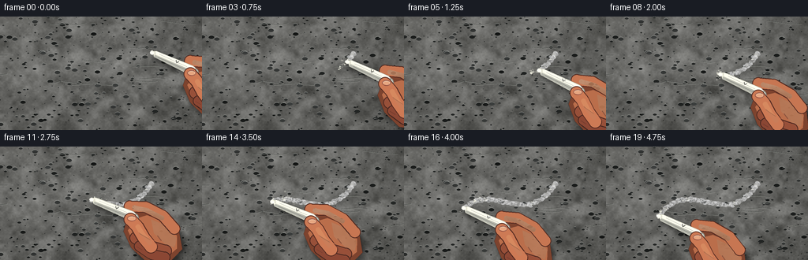
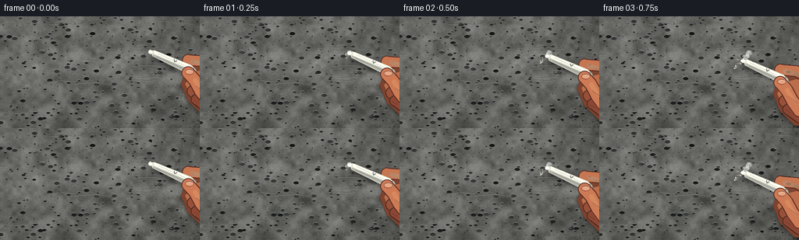

CODING AGENTS AS PIXEL WORLD MODELS
traex/GPT-5.6-Sol · mechanics_0044
点击播放 · 原生 RGB 像素
逐轮保存的候选
回放视频、检查图与代码变化。
每份候选均可单独播放。实际图片检查记录在下方工具轨迹中。
候选 01播放与检查图
点击播放 · 原生 RGB 像素


展开代码变化
--- 上一保存版本
+++ 本次保存版本
@@ -0,0 +1,292 @@
+from pathlib import Path
+import math
+import numpy as np
+from PIL import Image, ImageDraw, ImageFilter
+import artifact_io
+
+# Deterministic, hand-built macro scene: chalk dragged over a coarse concrete wall.
+W, H, N, FPS = 256, 144, 20, 4.0
+S = 3
+SW, SH = W*S, H*S
+rng = np.random.default_rng(4404)
+
+def scpt(p):
+ return (int(round(p[0]*S)), int(round(p[1]*S)))
+
+def rgba_layer():
+ return Image.new('RGBA', (SW, SH), (0,0,0,0))
+
+def concrete_background():
+ yy, xx = np.mgrid[0:SH, 0:SW]
+ # Soft directional illumination across a cool gray wall.
+ light = 13.0 - 12.0*(xx/SW) - 7.0*(yy/SH)
+ base = np.empty((SH, SW, 3), np.float32)
+ base[:] = (103, 105, 103)
+ base += light[...,None]
+ # Layered granular noise gives both cement grain and broad aggregate variation.
+ for gh, gw, amp in [(10,18,10.0),(28,48,6.0),(90,150,3.4),(SH,SW,1.5)]:
+ noise = rng.normal(0, 1, (gh,gw))
+ lo = Image.fromarray(np.uint8(np.clip(noise*32+128,0,255)), 'L')
+ mode = Image.Resampling.BICUBIC if gh < SH else Image.Resampling.NEAREST
+ lo = lo.resize((SW,SH), mode)
+ n = (np.asarray(lo).astype(np.float32)-128)/32
+ base += amp*n[...,None]
+ # Slightly warmer highlights than shadows.
+ base[...,0] += 2
+ base[...,2] -= 1
+ base = np.clip(base, 48, 160).astype(np.uint8)
+ im = Image.fromarray(base, 'RGB').convert('RGBA')
+ d = ImageDraw.Draw(im, 'RGBA')
+ # Embedded stones and open pores.
+ for _ in range(390):
+ x = float(rng.uniform(0,SW)); y = float(rng.uniform(0,SH))
+ r = float(rng.choice([1,1,1,2,2,3,4,6]))
+ dark = int(rng.integers(28,67)); a = int(rng.integers(20,95))
+ d.ellipse((x-r*1.7,y-r,x+r*1.7,y+r), fill=(dark,dark+2,dark+1,a))
+ if r > 2:
+ d.arc((x-r*1.8,y-r*1.1,x+r*1.8,y+r*1.1),190,345,
+ fill=(190,192,187,int(a*.35)),width=max(1,int(r*.25)))
+ # Hairline cracks and trowel scratches.
+ for _ in range(14):
+ x=float(rng.uniform(-20,260))*S; y=float(rng.uniform(0,144))*S
+ pts=[(x,y)]
+ for j in range(int(rng.integers(2,5))):
+ x += float(rng.uniform(6,17))*S
+ y += float(rng.uniform(-2.4,2.4))*S
+ pts.append((x,y))
+ d.line(pts, fill=(45,48,46,int(rng.integers(35,75))), width=1)
+ d.line([(a+1,b+1) for a,b in pts], fill=(174,175,169,25), width=1)
+ # Optical vignette.
+ arr=np.asarray(im.convert('RGB')).astype(np.float32)
+ X=(xx-SW*.48)/(SW*.72); Y=(yy-SH*.48)/(SH*.85)
+ vig=np.clip((X*X+Y*Y)*15,0,18)
+ arr -= vig[...,None]
+ return Image.fromarray(np.uint8(np.clip(arr,0,255)), 'RGB').convert('RGBA')
+
+BG = concrete_background()
+
+# Cubic curve drawn from upper-right toward lower-left. It reads as a deliberate S stroke.
+P0=np.array([193.0,46.0]); P1=np.array([151.0,111.0]); P2=np.array([111.0,33.0]); P3=np.array([67.0,88.0])
+def path(q):
+ q=float(np.clip(q,0,1)); m=1-q
+ return m**3*P0 + 3*m*m*q*P1 + 3*m*q*q*P2 + q**3*P3
+
+def frame_axes(q):
+ # Chalk is consistently laid at a shallow rubbing angle, with subtle pressure wobble.
+ ang = math.radians(24 + 2.2*math.sin(q*math.pi*2.2))
+ u=np.array([math.cos(ang), math.sin(ang)])
+ n=np.array([-u[1],u[0]])
+ return u,n
+
+def local_poly(origin,u,n,coords):
+ return [scpt(origin+a*u+b*n) for a,b in coords]
+
+def alpha_composite(base, overlay):
+ return Image.alpha_composite(base, overlay)
+
+# Persistent stroke dabs. Fixed random data avoids any temporal shimmer.
+trail_q=np.linspace(0,1,620)
+trail_rand=np.random.default_rng(848)
+trail_jitter=trail_rand.normal(0,1.0,len(trail_q))
+trail_along=trail_rand.normal(0,.38,len(trail_q))
+trail_r=trail_rand.uniform(.45,2.15,len(trail_q))
+trail_alpha=trail_rand.integers(65,210,len(trail_q))
+trail_bright=trail_rand.random(len(trail_q))
+
+# Deterministic dust emission schedule.
+prng=np.random.default_rng(212)
+particle_count=250
+emit=np.sort(prng.uniform(0,4.76,particle_count))
+p_size=prng.uniform(.28,1.55,particle_count)
+p_vx=prng.normal(-7,9,particle_count)
+p_vy=prng.normal(-10,8,particle_count)
+p_life=prng.uniform(.32,1.02,particle_count)
+p_phase=prng.uniform(0,10,particle_count)
+
+def draw_trail(base, qnow):
+ lay=rgba_layer(); d=ImageDraw.Draw(lay,'RGBA')
+ upto=max(1,int(qnow*(len(trail_q)-1))+1)
+ # Faint rubbed-in bed under the grainy white deposit.
+ core=[]
+ for q in np.linspace(0,qnow,max(2,int(170*qnow)+2)):
+ p=path(q)
+ core.append(scpt(p))
+ if len(core)>1:
+ d.line(core, fill=(228,229,217,72), width=5*S, joint='curve')
+ d.line(core, fill=(242,242,229,66), width=2*S, joint='curve')
+ # Hundreds of irregular deposits reproduce skipping over concrete peaks.
+ for i in range(upto):
+ q=trail_q[i]; p=path(q)
+ dq=.002
+ tang=path(min(1,q+dq))-path(max(0,q-dq)); tang/=np.linalg.norm(tang)+1e-5
+ norm=np.array([-tang[1],tang[0]])
+ c=p+norm*trail_jitter[i]+tang*trail_along[i]
+ r=trail_r[i]
+ if trail_bright[i] < .10:
+ col=(255,255,243,int(min(245,trail_alpha[i]+45)))
+ r*=.72
+ else:
+ v=int(218+25*trail_bright[i]); col=(v,v,min(255,v+1),int(trail_alpha[i]))
+ x,y=c*S
+ d.ellipse((x-r*S*1.35,y-r*S*.72,x+r*S*1.35,y+r*S*.72),fill=col)
+ # Bare gray pinholes interrupt the deposit and sell the rough surface.
+ holes=rgba_layer(); hd=ImageDraw.Draw(holes,'RGBA')
+ hrng=np.random.default_rng(999)
+ for i in range(int(74*qnow)):
+ qq=float(hrng.uniform(0,max(qnow,.001))); p=path(qq)
+ tang=path(min(1,qq+.004))-path(max(0,qq-.004)); tang/=np.linalg.norm(tang)+1e-5
+ norm=np.array([-tang[1],tang[0]])
+ p += norm*float(hrng.normal(0,1.7))
+ rr=float(hrng.uniform(.18,.65))*S; x,y=p*S
+ hd.ellipse((x-rr,y-rr,x+rr,y+rr),fill=(65,67,65,int(hrng.integers(40,115))))
+ lay=alpha_composite(lay,holes)
+ return alpha_composite(base,lay)
+
+def draw_dust(base, t, contact, u, n):
+ # Soft friction plume hugging the point of contact.
+ haze=rgba_layer(); hd=ImageDraw.Draw(haze,'RGBA')
+ hr=np.random.default_rng(1000+int(round(t*FPS)))
+ for _ in range(28):
+ a=float(hr.normal(-2,4.5)); b=float(hr.normal(0,3.2))
+ c=contact+a*u+b*n; r=float(hr.uniform(.5,2.7))*S
+ alpha=int(hr.uniform(4,23))
+ hd.ellipse((c[0]*S-r,c[1]*S-r*.6,c[0]*S+r,c[1]*S+r*.6),fill=(248,247,231,alpha))
+ haze=haze.filter(ImageFilter.GaussianBlur(2.1*S))
+ base=alpha_composite(base,haze)
+ # Airborne grains and a few obvious chips.
+ lay=rgba_layer(); d=ImageDraw.Draw(lay,'RGBA')
+ for i,e in enumerate(emit):
+ age=t-e
+ if age<0 or age>p_life[i]: continue
+ q=e/4.76; source=path(q)
+ fade=(1-age/p_life[i])**1.35
+ x=source[0]+p_vx[i]*age+math.sin(p_phase[i]+age*10)*.7
+ y=source[1]+p_vy[i]*age+12*age*age
+ r=p_size[i]*(.85+.35*age)*S
+ a=int(220*fade)
+ if p_size[i]>.95:
+ # Angular flake rather than a perfect point.
+ d.polygon([(x*S-r,y*S),(x*S+r*.8,y*S-r*.35),(x*S+r*.25,y*S+r*.65),
+ (x*S-r*.65,y*S+r*.25)],fill=(245,244,228,a))
+ else:
+ d.ellipse((x*S-r,y*S-r,x*S+r,y*S+r),fill=(249,248,232,a))
+ return alpha_composite(base,lay)
+
+def draw_hand_and_chalk(base, contact, q, frame_index):
+ u,n=frame_axes(q)
+ # Contact pressure jitter, visibly constrained to the wall.
+ contact=contact+n*(.45*math.sin(frame_index*2.7))
+
+ # Combined cast shadow just beneath hand and chalk.
+ shadow=rgba_layer(); sd=ImageDraw.Draw(shadow,'RGBA')
+ handcoords=[(50,-2),(65,-15),(91,-17),(118,-4),(130,15),(120,39),(94,47),(69,38),(52,22)]
+ shifted=contact+np.array([2.8,3.5])
+ sd.polygon(local_poly(shifted,u,n,handcoords),fill=(8,8,7,125))
+ sd.line([scpt(shifted+0*u),scpt(shifted+63*u)],fill=(5,5,4,145),width=9*S)
+ shadow=shadow.filter(ImageFilter.GaussianBlur(3.0*S))
+ base=alpha_composite(base,shadow)
+
+ hand=rgba_layer(); d=ImageDraw.Draw(hand,'RGBA')
+ # Palm silhouette with warm bounced light and dark contour.
+ d.polygon(local_poly(contact,u,n,handcoords),fill=(126,70,50,255),
+ outline=(73,43,36,230))
+ inner=[(61,1),(72,-8),(94,-9),(117,2),(123,17),(114,34),(93,40),(72,33),(57,19)]
+ d.polygon(local_poly(contact,u,n,inner),fill=(184,111,78,255))
+ glow=[(79,-5),(101,-5),(118,5),(120,17),(107,17),(89,10)]
+ d.polygon(local_poly(contact,u,n,glow),fill=(210,137,98,205))
+
+ def thick_line(points,width,fill,outline=None,ow=0):
+ pts=local_poly(contact,u,n,points)
+ if outline:
+ d.line(pts,fill=outline,width=int((width+ow)*S),joint='curve')
+ for z in (pts[0],pts[-1]):
+ rr=(width+ow)*S/2; d.ellipse((z[0]-rr,z[1]-rr,z[0]+rr,z[1]+rr),fill=outline)
+ d.line(pts,fill=fill,width=int(width*S),joint='curve')
+ for z in (pts[0],pts[-1]):
+ rr=width*S/2; d.ellipse((z[0]-rr,z[1]-rr,z[0]+rr,z[1]+rr),fill=fill)
+
+ # Index finger curls behind the chalk.
+ thick_line([(48,-10),(67,-17),(91,-15),(111,-5)],13,(196,119,84,255),(86,47,38,255),2)
+ thick_line([(54,-11),(70,-14),(91,-12)],6,(224,151,109,170))
+ # Lower fingers peeking from below the grip.
+ thick_line([(70,24),(91,27),(111,25)],14,(151,83,61,255),(79,43,36,240),2)
+ thick_line([(78,32),(96,36),(113,33)],12,(139,74,56,255),(72,40,34,220),2)
+ base=alpha_composite(base,hand)
+
+ # Chalk stick: faceted cylindrical body, rubbed tip, lengthwise wear lines.
+ chalk=rgba_layer(); cd=ImageDraw.Draw(chalk,'RGBA')
+ body=[(-1,-2.2),(4,-4.4),(54,-6.1),(61,-3.8),(62,4.7),(55,6.2),(4,4.2)]
+ cd.polygon(local_poly(contact,u,n,body),fill=(226,225,209,255),outline=(151,151,140,255))
+ top=[(3,-3.8),(53,-5.4),(59,-3.4),(56,-.4),(5,.1)]
+ cd.polygon(local_poly(contact,u,n,top),fill=(253,252,237,255))
+ low=[(4,1),(57,0),(61,4),(54,5.5),(4,3.8)]
+ cd.polygon(local_poly(contact,u,n,low),fill=(179,180,170,255))
+ # Far broken end.
+ endc=contact+61*u+.25*n; ex,ey=endc*S
+ cd.ellipse((ex-3.7*S,ey-5*S,ex+3.2*S,ey+5*S),fill=(199,199,187,255),outline=(139,140,131,255),width=S)
+ # Long grooves and small fractures.
+ for b,col,wid in [(-2.1,(255,255,242,155),.7),(2.25,(139,141,134,115),.55)]:
+ cd.line(local_poly(contact,u,n,[(9,b),(47,b+.25)]),fill=col,width=max(1,int(wid*S)))
+ cd.line(local_poly(contact,u,n,[(31,-4),(33,-1),(35,-4)]),fill=(137,138,130,150),width=1*S)
+ base=alpha_composite(base,chalk)
+
+ # Thumb passes over the stick and visibly clamps it against the wall.
+ thumb=rgba_layer(); td=ImageDraw.Draw(thumb,'RGBA')
+ def thumbline(points,width,fill,outline,ow):
+ pts=local_poly(contact,u,n,points)
+ td.line(pts,fill=outline,width=int((width+ow)*S),joint='curve')
+ for z in (pts[0],pts[-1]):
+ rr=(width+ow)*S/2; td.ellipse((z[0]-rr,z[1]-rr,z[0]+rr,z[1]+rr),fill=outline)
+ td.line(pts,fill=fill,width=int(width*S),joint='curve')
+ for z in (pts[0],pts[-1]):
+ rr=width*S/2; td.ellipse((z[0]-rr,z[1]-rr,z[0]+rr,z[1]+rr),fill=fill)
+ thumbline([(92,27),(79,20),(66,10),(55,5)],15,(202,123,87,255),(87,47,38,255),2)
+ thumbline([(88,23),(77,17),(67,10)],6,(229,154,110,155),(229,154,110,0),0)
+ # Nail at thumb tip.
+ nail_center=contact+56*u+3.3*n
+ a,b=nail_center*S; rr=5*S
+ td.ellipse((a-rr*1.15,b-rr*.7,a+rr*1.15,b+rr*.7),fill=(231,164,126,235),outline=(150,83,68,220),width=S)
+ td.arc((a-rr*.9,b-rr*.5,a+rr*.9,b+rr*.5),195,345,fill=(250,193,154,175),width=S)
+ # Skin creases.
+ for coords in [[(94,11),(101,15)],[(92,18),(99,22)],[(75,34),(83,35)]]:
+ td.line(local_poly(contact,u,n,coords),fill=(102,54,46,125),width=S)
+ base=alpha_composite(base,thumb)
+
+ # Brilliant compressed chalk at the exact friction point.
+ tip=rgba_layer(); tipd=ImageDraw.Draw(tip,'RGBA')
+ cx,cy=contact*S
+ tipd.ellipse((cx-2.7*S,cy-2.25*S,cx+2.3*S,cy+2.25*S),fill=(255,255,241,235))
+ tipd.line([scpt(contact-3*u),scpt(contact+2*u)],fill=(255,255,248,245),width=2*S)
+ base=alpha_composite(base,tip)
+ return base,contact,u,n
+
+def render_frame(i):
+ t=i/FPS
+ q=min(1.0,t/4.75)
+ # Gentle easing avoids a mechanical start/stop but preserves steady rubbing.
+ qe=q*q*(3-2*q)
+ contact=path(qe)
+ u,n=frame_axes(qe)
+ im=BG.copy()
+ im=draw_trail(im,qe)
+ im=draw_dust(im,t,contact,u,n)
+ im,contact,u,n=draw_hand_and_chalk(im,contact,qe,i)
+ # A few fresh grains float in front of the tip, emphasizing scraping action.
+ fg=rgba_layer(); fd=ImageDraw.Draw(fg,'RGBA')
+ fr=np.random.default_rng(700+i)
+ for _ in range(8):
+ p=contact+fr.normal(0,1.5)*u+fr.normal(0,2.7)*n
+ r=float(fr.uniform(.25,.72))*S; x,y=p*S
+ fd.ellipse((x-r,y-r,x+r,y+r),fill=(255,254,239,int(fr.integers(90,225))))
+ im=alpha_composite(im,fg)
+ im=im.convert('RGB').resize((W,H),Image.Resampling.LANCZOS)
+ # Subtle cinematic contrast after downsampling.
+ a=np.asarray(im).astype(np.float32)
+ a=(a-128)*1.045+128
+ a=np.clip(a,0,255).astype(np.uint8)
+ return a
+
+frames=np.stack([render_frame(i) for i in range(N)],axis=0)
+assert frames.shape==(N,H,W,3) and frames.dtype==np.uint8
+artifact_io.save(frames, Path(__file__).resolve().parent)
+print('saved',frames.shape,frames.dtype,'range',int(frames.min()),int(frames.max()))
可观测工具轨迹
实际执行的命令与返回图片。
命令 1exit 0
/bin/bash -lc "cat prompt.txt && printf '\\n---RULES---\\n' && cat GENERATION_RULES.md && printf '\\n---SPEC---\\n' && cat task_spec.json"
命令 2exit 0
/bin/bash -lc "find . -maxdepth 2 -type f -printf '%p %s bytes\\n' | sort && printf '\\nTOOLS\\n' && command -v ffmpeg || true && command -v python3 || true"
命令 3exit 0
/bin/bash -lc 'cat artifact_io.py'
命令 4exit 0
/bin/bash -lc "cat > generate.py <<'PY'
from pathlib import Path
import math
import numpy as np
from PIL import Image, ImageDraw, ImageFilter
import artifact_io
# Deterministic, hand-built macro scene: chalk dragged over a coarse concrete wall.
W, H, N, FPS = 256, 144, 20, 4.0
S = 3
SW, SH = W*S, H*S
rng = np.random.default_rng(4404)
def scpt(p):
return (int(round(p[0]*S)), int(round(p[1]*S)))
def rgba_layer():
return Image.new('RGBA', (SW, SH), (0,0,0,0))
def concrete_background():
yy, xx = np.mgrid[0:SH, 0:SW]
# Soft directional illumination across a cool gray wall.
light = 13.0 - 12.0*(xx/SW) - 7.0*(yy/SH)
base = np.empty((SH, SW, 3), np.float32)
base[:] = (103, 105, 103)
base += light[...,None]
# Layered granular noise gives both cement grain and broad aggregate variation.
for gh, gw, amp in [(10,18,10.0),(28,48,6.0),(90,150,3.4),(SH,SW,1.5)]:
noise = rng.normal(0, 1, (gh,gw))
lo = Image.fromarray(np.uint8(np.clip(noise*32+128,0,255)), 'L')
mode = Image.Resampling.BICUBIC if gh < SH else Image.Resampling.NEAREST
lo = lo.resize((SW,SH), mode)
n = (np.asarray(lo).astype(np.float32)-128)/32
base += amp*n[...,None]
# Slightly warmer highlights than shadows.
base[...,0] += 2
base[...,2] -= 1
base = np.clip(base, 48, 160).astype(np.uint8)
im = Image.fromarray(base, 'RGB').convert('RGBA')
d = ImageDraw.Draw(im, 'RGBA')
# Embedded stones and open pores.
for _ in range(390):
x = float(rng.uniform(0,SW)); y = float(rng.uniform(0,SH))
r = float(rng.choice([1,1,1,2,2,3,4,6]))
dark = int(rng.integers(28,67)); a = int(rng.integers(20,95))
d.ellipse((x-r*1.7,y-r,x+r*1.7,y+r), fill=(dark,dark+2,dark+1,a))
if r > 2:
d.arc((x-r*1.8,y-r*1.1,x+r*1.8,y+r*1.1),190,345,
fill=(190,192,187,int(a*.35)),width=max(1,int(r*.25)))
# Hairline cracks and trowel scratches.
for _ in range(14):
x=float(rng.uniform(-20,260))*S; y=float(rng.uniform(0,144))*S
pts=[(x,y)]
for j in range(int(rng.integers(2,5))):
x += float(rng.uniform(6,17))*S
y += float(rng.uniform(-2.4,2.4))*S
pts.append((x,y))
d.line(pts, fill=(45,48,46,int(rng.integers(35,75))), width=1)
d.line([(a+1,b+1) for a,b in pts], fill=(174,175,169,25), width=1)
# Optical vignette.
arr=np.asarray(im.convert('RGB')).astype(np.float32)
X=(xx-SW*.48)/(SW*.72); Y=(yy-SH*.48)/(SH*.85)
vig=np.clip((X*X+Y*Y)*15,0,18)
arr -= vig[...,None]
return Image.fromarray(np.uint8(np.clip(arr,0,255)), 'RGB').convert('RGBA')
BG = concrete_background()
# Cubic curve drawn from upper-right toward lower-left. It reads as a deliberate S stroke.
P0=np.array([193.0,46.0]); P1=np.array([151.0,111.0]); P2=np.array([111.0,33.0]); P3=np.array([67.0,88.0])
def path(q):
q=float(np.clip(q,0,1)); m=1-q
return m**3*P0 + 3*m*m*q*P1 + 3*m*q*q*P2 + q**3*P3
def frame_axes(q):
# Chalk is consistently laid at a shallow rubbing angle, with subtle pressure wobble.
ang = math.radians(24 + 2.2*math.sin(q*math.pi*2.2))
u=np.array([math.cos(ang), math.sin(ang)])
n=np.array([-u[1],u[0]])
return u,n
def local_poly(origin,u,n,coords):
return [scpt(origin+a*u+b*n) for a,b in coords]
def alpha_composite(base, overlay):
return Image.alpha_composite(base, overlay)
# Persistent stroke dabs. Fixed random data avoids any temporal shimmer.
trail_q=np.linspace(0,1,620)
trail_rand=np.random.default_rng(848)
trail_jitter=trail_rand.normal(0,1.0,len(trail_q))
trail_along=trail_rand.normal(0,.38,len(trail_q))
trail_r=trail_rand.uniform(.45,2.15,len(trail_q))
trail_alpha=trail_rand.integers(65,210,len(trail_q))
trail_bright=trail_rand.random(len(trail_q))
# Deterministic dust emission schedule.
prng=np.random.default_rng(212)
particle_count=250
emit=np.sort(prng.uniform(0,4.76,particle_count))
p_size=prng.uniform(.28,1.55,particle_count)
p_vx=prng.normal(-7,9,particle_count)
p_vy=prng.normal(-10,8,particle_count)
p_life=prng.uniform(.32,1.02,particle_count)
p_phase=prng.uniform(0,10,particle_count)
def draw_trail(base, qnow):
lay=rgba_layer(); d=ImageDraw.Draw(lay,'RGBA')
upto=max(1,int(qnow*(len(trail_q)-1))+1)
# Faint rubbed-in bed under the grainy white deposit.
core=[]
for q in np.linspace(0,qnow,max(2,int(170*qnow)+2)):
p=path(q)
core.append(scpt(p))
if len(core)>1:
d.line(core, fill=(228,229,217,72), width=5*S, joint='curve')
d.line(core, fill=(242,242,229,66), width=2*S, joint='curve')
# Hundreds of irregular deposits reproduce skipping over concrete peaks.
for i in range(upto):
q=trail_q[i]; p=path(q)
dq=.002
tang=path(min(1,q+dq))-path(max(0,q-dq)); tang/=np.linalg.norm(tang)+1e-5
norm=np.array([-tang[1],tang[0]])
c=p+norm*trail_jitter[i]+tang*trail_along[i]
r=trail_r[i]
if trail_bright[i] < .10:
col=(255,255,243,int(min(245,trail_alpha[i]+45)))
r*=.72
else:
v=int(218+25*trail_bright[i]); col=(v,v,min(255,v+1),int(trail_alpha[i]))
x,y=c*S
d.ellipse((x-r*S*1.35,y-r*S*.72,x+r*S*1.35,y+r*S*.72),fill=col)
# Bare gray pinholes interrupt the deposit and sell the rough surface.
holes=rgba_layer(); hd=ImageDraw.Draw(holes,'RGBA')
hrng=np.random.default_rng(999)
for i in range(int(74*qnow)):
qq=float(hrng.uniform(0,max(qnow,.001))); p=path(qq)
tang=path(min(1,qq+.004))-path(max(0,qq-.004)); tang/=np.linalg.norm(tang)+1e-5
norm=np.array([-tang[1],tang[0]])
p += norm*float(hrng.normal(0,1.7))
rr=float(hrng.uniform(.18,.65))*S; x,y=p*S
hd.ellipse((x-rr,y-rr,x+rr,y+rr),fill=(65,67,65,int(hrng.integers(40,115))))
lay=alpha_composite(lay,holes)
return alpha_composite(base,lay)
def draw_dust(base, t, contact, u, n):
# Soft friction plume hugging the point of contact.
haze=rgba_layer(); hd=ImageDraw.Draw(haze,'RGBA')
hr=np.random.default_rng(1000+int(round(t*FPS)))
for _ in range(28):
a=float(hr.normal(-2,4.5)); b=float(hr.normal(0,3.2))
c=contact+a*u+b*n; r=float(hr.uniform(.5,2.7))*S
alpha=int(hr.uniform(4,23))
hd.ellipse((c[0]*S-r,c[1]*S-r*.6,c[0]*S+r,c[1]*S+r*.6),fill=(248,247,231,alpha))
haze=haze.filter(ImageFilter.GaussianBlur(2.1*S))
base=alpha_composite(base,haze)
# Airborne grains and a few obvious chips.
lay=rgba_layer(); d=ImageDraw.Draw(lay,'RGBA')
for i,e in enumerate(emit):
age=t-e
if age<0 or age>p_life[i]: continue
q=e/4.76; source=path(q)
fade=(1-age/p_life[i])**1.35
x=source[0]+p_vx[i]*age+math.sin(p_phase[i]+age*10)*.7
y=source[1]+p_vy[i]*age+12*age*age
r=p_size[i]*(.85+.35*age)*S
a=int(220*fade)
if p_size[i]>.95:
# Angular flake rather than a perfect point.
d.polygon([(x*S-r,y*S),(x*S+r*.8,y*S-r*.35),(x*S+r*.25,y*S+r*.65),
(x*S-r*.65,y*S+r*.25)],fill=(245,244,228,a))
else:
d.ellipse((x*S-r,y*S-r,x*S+r,y*S+r),fill=(249,248,232,a))
return alpha_composite(base,lay)
def draw_hand_and_chalk(base, contact, q, frame_index):
u,n=frame_axes(q)
# Contact pressure jitter, visibly constrained to the wall.
contact=contact+n*(.45*math.sin(frame_index*2.7))
# Combined cast shadow just beneath hand and chalk.
shadow=rgba_layer(); sd=ImageDraw.Draw(shadow,'RGBA')
handcoords=[(50,-2),(65,-15),(91,-17),(118,-4),(130,15),(120,39),(94,47),(69,38),(52,22)]
shifted=contact+np.array([2.8,3.5])
sd.polygon(local_poly(shifted,u,n,handcoords),fill=(8,8,7,125))
sd.line([scpt(shifted+0*u),scpt(shifted+63*u)],fill=(5,5,4,145),width=9*S)
shadow=shadow.filter(ImageFilter.GaussianBlur(3.0*S))
base=alpha_composite(base,shadow)
hand=rgba_layer(); d=ImageDraw.Draw(hand,'RGBA')
# Palm silhouette with warm bounced light and dark contour.
d.polygon(local_poly(contact,u,n,handcoords),fill=(126,70,50,255),
outline=(73,43,36,230))
inner=[(61,1),(72,-8),(94,-9),(117,2),(123,17),(114,34),(93,40),(72,33),(57,19)]
d.polygon(local_poly(contact,u,n,inner),fill=(184,111,78,255))
glow=[(79,-5),(101,-5),(118,5),(120,17),(107,17),(89,10)]
d.polygon(local_poly(contact,u,n,glow),fill=(210,137,98,205))
def thick_line(points,width,fill,outline=None,ow=0):
pts=local_poly(contact,u,n,points)
if outline:
d.line(pts,fill=outline,width=int((width+ow)*S),joint='curve')
for z in (pts[0],pts[-1]):
rr=(width+ow)*S/2; d.ellipse((z[0]-rr,z[1]-rr,z[0]+rr,z[1]+rr),fill=outline)
d.line(pts,fill=fill,width=int(width*S),joint='curve')
for z in (pts[0],pts[-1]):
rr=width*S/2; d.ellipse((z[0]-rr,z[1]-rr,z[0]+rr,z[1]+rr),fill=fill)
# Index finger curls behind the chalk.
thick_line([(48,-10),(67,-17),(91,-15),(111,-5)],13,(196,119,84,255),(86,47,38,255),2)
thick_line([(54,-11),(70,-14),(91,-12)],6,(224,151,109,170))
# Lower fingers peeking from below the grip.
thick_line([(70,24),(91,27),(111,25)],14,(151,83,61,255),(79,43,36,240),2)
thick_line([(78,32),(96,36),(113,33)],12,(139,74,56,255),(72,40,34,220),2)
base=alpha_composite(base,hand)
# Chalk stick: faceted cylindrical body, rubbed tip, lengthwise wear lines.
chalk=rgba_layer(); cd=ImageDraw.Draw(chalk,'RGBA')
body=[(-1,-2.2),(4,-4.4),(54,-6.1),(61,-3.8),(62,4.7),(55,6.2),(4,4.2)]
cd.polygon(local_poly(contact,u,n,body),fill=(226,225,209,255),outline=(151,151,140,255))
top=[(3,-3.8),(53,-5.4),(59,-3.4),(56,-.4),(5,.1)]
cd.polygon(local_poly(contact,u,n,top),fill=(253,252,237,255))
low=[(4,1),(57,0),(61,4),(54,5.5),(4,3.8)]
cd.polygon(local_poly(contact,u,n,low),fill=(179,180,170,255))
# Far broken end.
endc=contact+61*u+.25*n; ex,ey=endc*S
cd.ellipse((ex-3.7*S,ey-5*S,ex+3.2*S,ey+5*S),fill=(199,199,187,255),outline=(139,140,131,255),width=S)
# Long grooves and small fractures.
for b,col,wid in [(-2.1,(255,255,242,155),.7),(2.25,(139,141,134,115),.55)]:
cd.line(local_poly(contact,u,n,[(9,b),(47,b+.25)]),fill=col,width=max(1,int(wid*S)))
cd.line(local_poly(contact,u,n,[(31,-4),(33,-1),(35,-4)]),fill=(137,138,130,150),width=1*S)
base=alpha_composite(base,chalk)
# Thumb passes over the stick and visibly clamps it against the wall.
thumb=rgba_layer(); td=ImageDraw.Draw(thumb,'RGBA')
def thumbline(points,width,fill,outline,ow):
pts=local_poly(contact,u,n,points)
td.line(pts,fill=outline,width=int((width+ow)*S),joint='curve')
for z in (pts[0],pts[-1]):
rr=(width+ow)*S/2; td.ellipse((z[0]-rr,z[1]-rr,z[0]+rr,z[1]+rr),fill=outline)
td.line(pts,fill=fill,width=int(width*S),joint='curve')
for z in (pts[0],pts[-1]):
rr=width*S/2; td.ellipse((z[0]-rr,z[1]-rr,z[0]+rr,z[1]+rr),fill=fill)
thumbline([(92,27),(79,20),(66,10),(55,5)],15,(202,123,87,255),(87,47,38,255),2)
thumbline([(88,23),(77,17),(67,10)],6,(229,154,110,155),(229,154,110,0),0)
# Nail at thumb tip.
nail_center=contact+56*u+3.3*n
a,b=nail_center*S; rr=5*S
td.ellipse((a-rr*1.15,b-rr*.7,a+rr*1.15,b+rr*.7),fill=(231,164,126,235),outline=(150,83,68,220),width=S)
td.arc((a-rr*.9,b-rr*.5,a+rr*.9,b+rr*.5),195,345,fill=(250,193,154,175),width=S)
# Skin creases.
for coords in [[(94,11),(101,15)],[(92,18),(99,22)],[(75,34),(83,35)]]:
td.line(local_poly(contact,u,n,coords),fill=(102,54,46,125),width=S)
base=alpha_composite(base,thumb)
# Brilliant compressed chalk at the exact friction point.
tip=rgba_layer(); tipd=ImageDraw.Draw(tip,'RGBA')
cx,cy=contact*S
tipd.ellipse((cx-2.7*S,cy-2.25*S,cx+2.3*S,cy+2.25*S),fill=(255,255,241,235))
tipd.line([scpt(contact-3*u),scpt(contact+2*u)],fill=(255,255,248,245),width=2*S)
base=alpha_composite(base,tip)
return base,contact,u,n
def render_frame(i):
t=i/FPS
q=min(1.0,t/4.75)
# Gentle easing avoids a mechanical start/stop but preserves steady rubbing.
qe=q*q*(3-2*q)
contact=path(qe)
u,n=frame_axes(qe)
im=BG.copy()
im=draw_trail(im,qe)
im=draw_dust(im,t,contact,u,n)
im,contact,u,n=draw_hand_and_chalk(im,contact,qe,i)
# A few fresh grains float in front of the tip, emphasizing scraping action.
fg=rgba_layer(); fd=ImageDraw.Draw(fg,'RGBA')
fr=np.random.default_rng(700+i)
for _ in range(8):
p=contact+fr.normal(0,1.5)*u+fr.normal(0,2.7)*n
r=float(fr.uniform(.25,.72))*S; x,y=p*S
fd.ellipse((x-r,y-r,x+r,y+r),fill=(255,254,239,int(fr.integers(90,225))))
im=alpha_composite(im,fg)
im=im.convert('RGB').resize((W,H),Image.Resampling.LANCZOS)
# Subtle cinematic contrast after downsampling.
a=np.asarray(im).astype(np.float32)
a=(a-128)*1.045+128
a=np.clip(a,0,255).astype(np.uint8)
return a
frames=np.stack([render_frame(i) for i in range(N)],axis=0)
assert frames.shape==(N,H,W,3) and frames.dtype==np.uint8
artifact_io.save(frames, Path(__file__).resolve().parent)
print('saved',frames.shape,frames.dtype,'range',int(frames.min()),int(frames.max()))
PY
python3 generate.py
ls -lh pixels.npz index.html inspection.png transition_check.png frames/00.png frames/19.png"命令 5exit 0
/bin/bash -lc "python3 - <<'PY'
from pathlib import Path
import numpy as np
from PIL import Image
z=np.load('pixels.npz')['pixels']
assert z.shape==(144,256,20)
imgs=np.stack([np.asarray(Image.open(f'frames/{i:02d}.png').convert('RGB')) for i in range(20)])
assert imgs.shape==(20,144,256,3) and imgs.dtype==np.uint8
motion=np.mean(np.abs(np.diff(imgs.astype(np.int16),axis=0)),axis=(1,2,3))
print('verified RGB frames:',imgs.shape)
print('adjacent-frame mean changes:',np.round(motion,2).tolist())
print('all required:',all(Path(p).exists() for p in ['generate.py','pixels.npz','index.html','inspection.png','transition_check.png']))
PY"保存候选 1 份；完成命令 5 次；可验证图片返回 0 张。原始 API 响应与完整日志保留在本地。